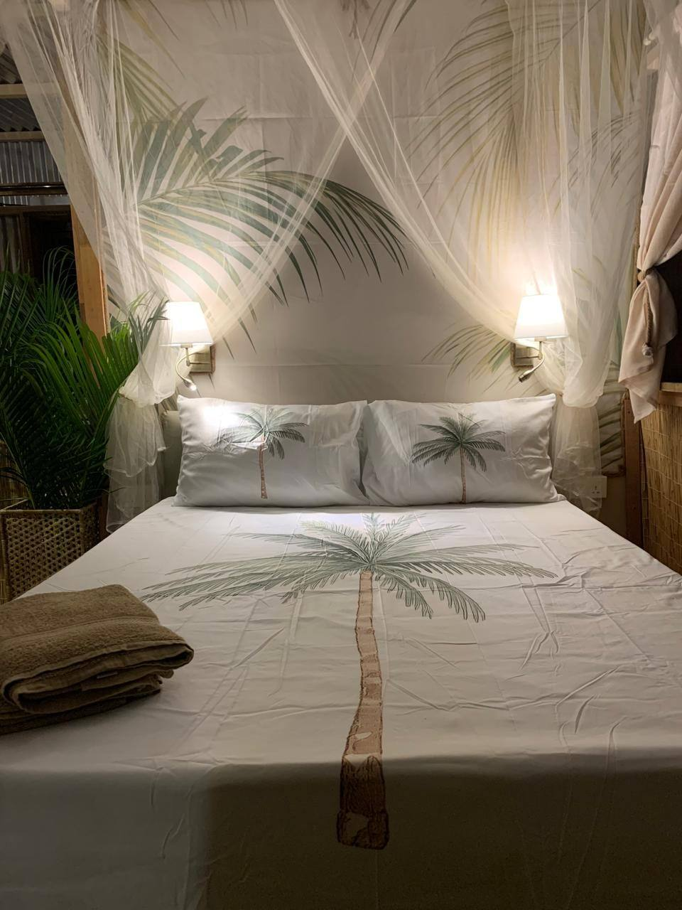

Pourquoi Rodrigues pour un séjour à deux
Rodrigues cultive un art de vivre paisible : des plages tranquilles, un lagon immense et l'accueil chaleureux des Rodriguais. Ici, les journées s'organisent autour de la mer, des sentiers et des bons repas. C'est l'île idéale pour ralentir ensemble.
Un lodge pensé pour deux
Le Lotus Lodge Ocean View réunit tout ce qu'on attend d'une escapade romantique :
- un lit sous voile, cadre en bois brut et moustiquaire blanche, face aux fenêtres du jardin ;
- une lumière tamisée le soir, avec les appliques de chevet ;
- une douche à pommeau pluie dans une salle de bain en bois flotté ;
- une terrasse et un balcon avec vue sur la mer et le jardin, pour les petits-déjeuners prolongés ;
- une entrée privée et un logement entier, au calme du Domaine des Bougainvilliers.

Nos idées de journées en amoureux
Matin au marché, déjeuner en terrasse
Le samedi matin, flânez au marché de Port Mathurin, à 3,5 km, et rapportez fruits, poisson et piments. La cuisine privative vous attend pour un déjeuner à deux face au jardin.
Une journée sur un îlot
Embarquez pour l'Île aux Cocos, réserve d'oiseaux marins, ou vers l'Île Gombrani dans le lagon sud : sable blanc, eau turquoise et snorkeling.
Le sentier côtier jusqu'à Trou d'Argent
Entre Graviers et Saint-François, le sentier côtier mène à des criques préservées, dont Trou d'Argent, accessible à pied. Une randonnée à deux inoubliable, à faire tôt le matin.
Fin de journée à Grand Baie
La plage de Grand Baie est à 700 m du lodge : une baignade au retour de vos excursions, puis une soirée tranquille sur la terrasse.
Plus d'idées dans notre guide que faire à Rodrigues.
Lune de miel, anniversaire, demande en mariage
Vous fêtez un moment important ? Dites-le à Jean-Noël dans votre message de réservation : il vous répond personnellement et partage ses meilleures adresses de l'île, des restaurants aux points de vue. Emma, l'une de nos voyageuses, garde le souvenir d'un lieu « calme et paisible » et d'un accueil « très chaleureux ».
Le week-end romantique depuis La Réunion ou Maurice
Avec environ 2 heures de vol depuis La Réunion et environ 1 h 30 depuis Maurice, Rodrigues se prête aux week-ends prolongés. L'arrivée au lodge est possible 24h/24, même pour un vol du soir. Tout est expliqué dans notre guide séjour à Rodrigues depuis La Réunion.